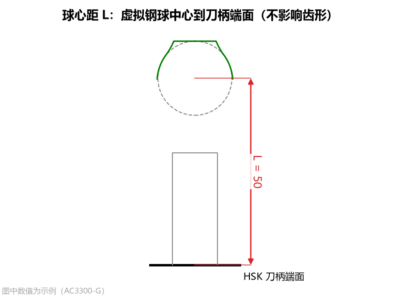
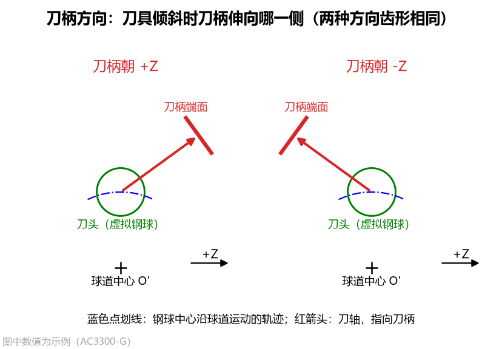
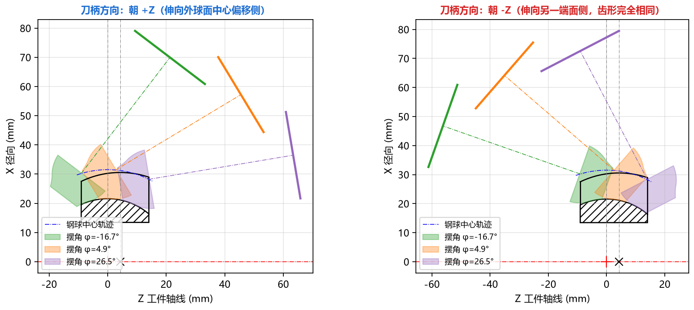
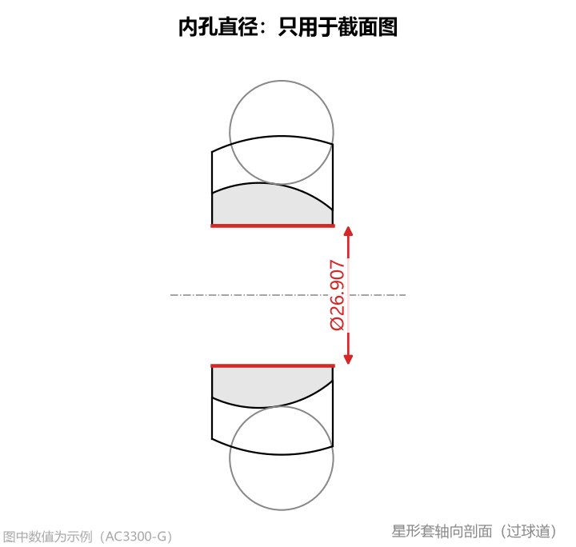

3.2 刀柄姿态与工件细节参数
本节介绍高级参数中的 刀柄与姿态（2 项参数）和 工件细节（1 项参数）。这两组参数完全不改变刀具切削齿形，主要用于确定 DXF 图纸中的刀柄端面基准位置、子午面加工姿态防干涉检查以及星形套轴向剖面图的绘制。
1. 球心距 L (gauge_length)

- 界面名称：
球心距 L - 单位：
mm - 默认值：
50.0 - 数值范围：
工程含义与用途
球心距 L 定义了沿着刀具轴线方向，从虚拟钢球中心（刀具设计原点 ）到刀柄（如 HSK 刀柄）定位端面的距离。
它在工程交付中有三个直接用途：
- 刀具点表 CSV 对刀基准换算：在导出的
刀具点表 CSV中，软件会自动根据球心距 L计算出以刀柄端面为零点的轴向坐标列z_端面（z_端面 = z_球心 + L），方便直接以刀柄端面为基准进行磨刀和机床对刀编程； - 刀具 DXF 与圆弧刀具 DXF 出图：在导出的 CAD 图纸中自动画出位于
z = -L处的刀柄端面基准线并标出球心距尺寸50； - 加工姿态干涉检查：在 Tab 4：加工姿态(子午面) 页签中画出刀柄端面粗实线，直观检查刀具摆动到球道两端时刀柄端面是否会碰到星形套。
2. 刀柄方向 (tilt_side)

- 界面名称：
刀柄方向 - 可选项：
朝 +Z（默认） /朝 -Z
工程含义与正反装夹对比
成型刀具按切入角 倾斜安装加工球道时，刀柄可以朝工件轴线的两个相反方向伸出：

朝 +Z（默认）：刀柄伸向 方向（即外球面中心相对球道中心 偏移所在的一侧）；朝 -Z：刀柄伸向 方向（另一端面侧）。
核心规律：无论选择
朝 +Z还是朝 -Z，计算出的刀具齿形尺寸 100% 完全相同（镜像对称）！它只改变 Tab 4：加工姿态(子午面) 中的刀柄伸出方向，供您根据机床主轴、尾座或夹具的实际位置核对哪一侧装夹无干涉。
3. 内孔直径 (bore_d)

- 界面名称：
内孔直径 - 单位：
mm - 默认值：
26.907 - 数值范围：大于
0且小于外球面直径
图纸读取与用途
内孔直径 对应星形套零件图上的中心内孔（花键孔）直径（花键孔一般可填花键小径或大径包络圆）：
- 不参与刀具计算：修改该值不会对刀具廓形或圆弧近似结果产生任何影响；
- 绘制零件剖面与核对壁厚：专门用于 Tab 3：星形套截面 页签和导出的 星形套截面 DXF (
part_section.dxf)，帮助工艺人员直观查看球道底圆弧到星形套内孔之间的实体壁厚（剖面线区域）。